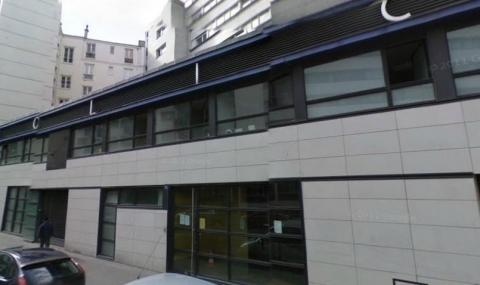

Témoignage sur les profileurs de la SSIT (Service de Soutien aux Investigations Territoriales)
Balade hasardeuse sur le boulevard de Belleville. Il est autour de 18h00, la Brigade Spécialisée de Terrain, véritable brigade anti-pauvres du 20ème arrondissement, vient de procéder à une incursion en plein marché des biffins. Une vingtaine d’agents prend la foule à parti et la fait circuler en beuglant. La tension est palpable, l’agressivité des flics est insupportable. Ils n’ont arrêté personne, mais plastronnent et exhibent leur attirail guerrier : matraques et gazeuses, lanceurs de balles et gilets tactiques. Ils abusent de leur pouvoir et exercent sur la foule leur domination virile et malsaine, en l’obligeant à obéir à ses injonctions bestiales.
Je me trouve pris dans la nasse et refuse de me laisser pousser, exprimant mon droit le plus naturel à rester là où je me trouve. Il n’en faut pas beaucoup plus pour me faire serrer les poignets avec une paire de menottes et embarquer vers le fourgon. Je suis accusé d’avoir « provoqué une émeute ».
Un vieil homme d’origine algérienne me rejoint bientôt, poussé sur la banquette et violenté parce qu’il ne peut pas plier le bras derrière le dos pour se faire menotter : il est invalide. Peu importe, un flic à poil roux le serre au cou et le cogne au genou gauche pour qu’il cède. Pendant ce temps, sur le terre-plein du boulevard, un autre homme gît sur le sol, inconscient. Il vient de se faire frapper et gazer dans les yeux. Il sera lui aussi embarqué une fois revenu à lui.
- Arrestation + 30 minutes : maison poulaga (20eme)
Direction le commissariat rue des Gâtines. Il est autour de 18h30. On poireaute trente minute avant de se voir prononcer nos droits. Pendant ces trente minutes, je fais silence, mais le vieil algérien choisit de discuter avec les flics, qui se font un plaisir de le tourner en dérision et d’enregistrer ses propos. Ils sont justes attristants de connerie. Je refuse de signer la paperasse. Peu après 19h00, après avoir été foutus en slip et fouillés une première fois, on est placés en cellule. Un matelas, un chiotte, un robinet d’eau. J’attends.
- Arrestation + 6 heures : transfert à l’USIT (19eme)
Minuit passé, on me sort de la cellule pour m’emmener dans un fourgon avec l’homme qui gisait tout à l’heure sur le sol. On remonte jusque dans le 19ème, métro Riquet. Au 3/5 rue Riquet, le fourgon nous débarque dans les locaux pourris de l’Unité de Soutien aux Investigations Territoriales (Service d’Investigation Transversale). Là, un écervelé me fait un remake de Full Metal Jacket : « ici, tu fais pas le malin, sinon t’es mort », pensant m’impressionner. De toute façon je ferme ma gueule. Il me demande de me déshabiller : « tu t’accroupis et tu tousses ». Puis il me pousse vers la cellule numéro 2, un clapier dégueulasse qui pue la pisse. Le mur est couvert de restes de repas et le bas des murs est rongé par de l’urine. Une pile de matelas est posé sur le sol, on me donne une couverture « propre » qui sent étrangement la pisse aussi. Le sol est infecte. Dans les cellules 1 et 3 se trouvent les deux autres personnes interpellées avec moi, toutes les deux malades et visiblement incompatibles avec une mesure de garde-à-vue.

L'USIT-Paris 19ème arrondissement, 5 rue Riquet
- Arrestation + 7 heures : audition avec l’avocate
Vers 1h40, on me dit que mon avocate n’a pas pu se déplacer et je rencontre une commise d’office. Elle m’explique les nouvelles règles de la garde à vue : je peux fermer ma gueule et être assisté de l’avocat pendant l’audition. L’OPJ semble sorti d’un vieux film anglais, ils nous amène à son bureau, avant d’enjoindre l’avocate de se tenir dans l’encadrure de la porte et de ne pas intervenir dans l’audition. Les questions s’enchaînent. J’ai bien retenu la leçon : après avoir rétabli de façon concise les événements qui m’ont amenés là, je refuse de répondre aux autres questions qui participent à en savoir plus sur moi et à démontrer mon « parcours délinquant ». Après quoi, l’avocate et l’OPJ se crêpent le chignon, parce que les observations de l’avocate heurtent son ego de « flic-tout-puissant ». On sent que la nouvelle réforme a du mal à passer, les flics n’aiment pas la transparence : c’est tellement plus facile de pressurer les gens sans regard extérieur.
- Arrestation + 9 heures : passage chez le médecin (île de la Cité)
Vers 4h30, alors que je dors enroulé dans la couverture puante pour ne pas avoir froid, on me réveille pour m’emmener avec le vieil algérien à l’hôpital de l’Hôtel-Dieu. Le conducteur du fourgon trace à travers les rues désertes de la capitale avant de s’arrêter sur l’île de la Cité. Dans les étages se trouve un service aménagé avec des cellules où s’entassent les « candidats » à la visite médicale venus de différents comico de Paris. On les appelle les uns après les autres. Le contrôle est rudimentaire, expéditif. Ce n’est qu’après 7h qu’on me ramène à une voiture de police : le médecin auxiliaire de police m’a déclaré compatible avec la garde-à-vue. Dans la voiture, les flics écoutent fun-radio et discutent de leur possibles mutations.
- Arrestation + 13 heures : retour à l’USIT
Il est 7h40 lorsqu’on passe en voiture au niveau de Stalingrad. J’aperçois les flics du maintien de l’ordre se préparer pour le rendez-vous anti-G8 de 9h. On me ramène à l’USIT où on me recolle dans la cellule qui pue. Les flics de la veille sont tous rentrés chez eux, la relève vient d’avoir lieu. Un nouvel OPJ découvre mon dossier et un nouveau maton est chargé de surveiller les gardés à vue. Le vieil algérien n’est plus là. Je m’endors.
Vers 9h00, un petit OPJ me sort de la cellule pour prendre mes empreintes : « si tu les donnes pas, on te défère tout de suite au parquet, t’auras au minimum un mois de prison avec sursis ». Je leur donne, en me disant qu’ils les ont déjà et que ça ne changera rien. Le petit flic me prend aussi en photo, de face, de profil, de trois-quarts et de pieds. Retour en cellule.
A 10h00 je pète un câble. Je leur gueule que ma détention est grotesque, que le motif pour lequel je suis là, à savoir « provocation à la rébellion », n’existe même pas dans le code pénal. L’ours qui me garde vient me faire son numéro de papa derrière la vitre : « je suis cool avec toi, alors sois cool avec moi. Si tu continues de faire chier, je fais comme au central, je te saucissonne et je te colle en contention ». Puis un OPJ débarque et m’emmène me calmer dans un coin, dans un mode « ami-ami, je te comprends et je fais tout mon possible ». Il me dit que le procu a lié mon affaire avec celle des deux personnes malades qui ont été arrêtés avec moi : on ne me libérera pas tant qu’ils ne seront pas revenus de l’hôpital. Je ne suis pas rendu...
- Arrestation + 18 heures : remise en liberté
A 12h00 je suis finalement relâché, sans poursuite. Presque 18 heures de gardav pour que dalle, pour avoir répondu à un keuf nerveux « il n’y a aucune raison que je parte ». Mais le mal est fait, je viens d’être enregistré dans les petites fiches de la SSIT*
*Le Service de Soutien aux Investigations Territoriales (SSIT) est un service « atypique voire expérimental » composé de deux unités disponibles à 24 h/24 :
 L’UNITE DE SOUTIEN OPERATIONNEL intervient en aide des Services de l’Accueil, de la Recherche et de l’Investigation Judiciaire (SARIJ) sur leur sollicitation pour le traitement d’affaires requérant un renfort d’OPJ, mène également des actions particulières telles que la gestion des évènements liés aux violences urbaines, les phénomènes de bandes (émeutes issues des manifestations CPE, Gare du Nord, etc.), le racolage et traite certaines affaires sensibles incombant à la Direction de la Police Urbaine de Proximité (DPUP), des affaires d’initiative nécessitant une élaboration procédurale complexe.
L’UNITE DE SOUTIEN OPERATIONNEL intervient en aide des Services de l’Accueil, de la Recherche et de l’Investigation Judiciaire (SARIJ) sur leur sollicitation pour le traitement d’affaires requérant un renfort d’OPJ, mène également des actions particulières telles que la gestion des évènements liés aux violences urbaines, les phénomènes de bandes (émeutes issues des manifestations CPE, Gare du Nord, etc.), le racolage et traite certaines affaires sensibles incombant à la Direction de la Police Urbaine de Proximité (DPUP), des affaires d’initiative nécessitant une élaboration procédurale complexe.
 L’UNITE DE RECHERCHES ET D’INVESTIGATIONS a pour vocation de combattre certaines formes de délinquance précises telles que les cambriolages, les vols par ruse sur la voie publique et certains vols avec violences commis à l’aide de véhicules deux roues (vols à l’arraché, vols à la portière, etc.), avec armes ou en réunion.
L’UNITE DE RECHERCHES ET D’INVESTIGATIONS a pour vocation de combattre certaines formes de délinquance précises telles que les cambriolages, les vols par ruse sur la voie publique et certains vols avec violences commis à l’aide de véhicules deux roues (vols à l’arraché, vols à la portière, etc.), avec armes ou en réunion.
Fort d’environ quatre-vingt-dix fonctionnaires (dont quarante Officiers de Police Judiciaire (OPJ)) la vocation essentielle du SSIT est d’élucider les infractions à caractère transversal ou nécessitant une mobilisation importante d’enquêteurs. Dotée de moyens spécifiques d’investigation, il est à même d’apporter son concours à tout service au sein de la DPUP.
Source : Service de Communication de la Préfecture.